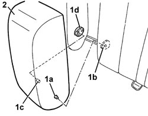
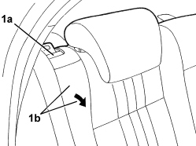
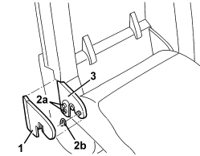
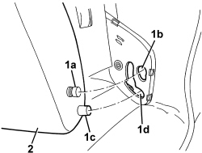

7050B18 REAR SEAT ARMREST - R+R
- Path
- Procedures > 70 FITTINGS > 7050 REAR SEATS > 7050B REAR SEAT HEAD RESTRAINT/ARMREST > 7050B18 REAR SEAT ARMREST - R+R
- Kind
- repair procedure (removal / refitting; the operation number is the code)
- Applies to
- all engines; all production periods
- Interactive page
- https://sloeber94.github.io/elrnDB/#/939011335
Applies to: all engines; all production periods; only with equipment: One-piece rear seat
 Removing
Removing
 Refitting
Refitting1. Using special pliers, retract the pin (1a) first and release it from the retainer (1b), then retract the pin (1c) and release it from the retainer (1d).
2. Extract the armrest and keep it.

Applies to: all engines; all production periods; only with equipment: One-piece rear seat
Refitting
Removing- Check that the armrest is not damaged.
- Fit the armrest in place and attach the pins.
Applies to: all engines; all production periods; only with equipment: Split rear seat
Removing
Refitting1. Operate the lever (1a) to release the right backrest (1b), then fold forward to the end of its travel.

Applies to: all engines; all production periods; only with equipment: Split rear seat
1. Working at the base of the armrest, release the trim.
2. Undo the bolts (2a) and release the circlip (2b).
3. Remove the plate.

Applies to: all engines; all production periods; only with equipment: Split rear seat
1. Rotate the armrest by about 45°, then extract the pin (1a) from the housing (1b) and the pin (1c) from the housing (1d).
2. Keep the armrest.

Applies to: all engines; all production periods; only with equipment: Split rear seat
Refitting
Removing- Check that the armrest is not damaged.
- Rotate the armrest through around 45°, then attach the pins in the rotation seats.
- Position the plate.
- Tighten the bolts and fit the circlip.
- Fit the surround.
- Lift up the right backrest to the end of its travel and and attach it to the retainer.
Topics that link to this page (7)
- 7050A43 SPLIT REAR SEAT ABCKREST ATTACHMENT/LOCKING DEVICE - R.R.
- 7050A53 SPLIT REAR SEAT BACKREST FRAME (ONE), LEFT OR RIGHT - R.R. WITH BACKREST REMOVED
- 7050D30 TRIM FOR REAR SEAT BACKREST - R.R.
- 7050D31 TRIM OF REAR SEAT SQUAB RR WITH SQUAB REMOVED
- 7050D34 TRIM FOR LEFT REAR SEAT BACKREST (TWO SEATER) - R.R.
- 7050D35 LEFT REAR SEAT BACKREST COVER (TWO SEATER) - R.R. WITH BACKREST REMOVED
- 7065B18 CENTRE REAR SEAT BELT - R.R.